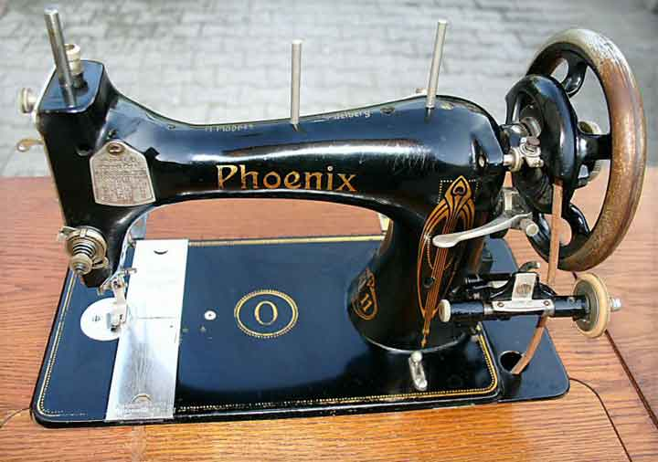
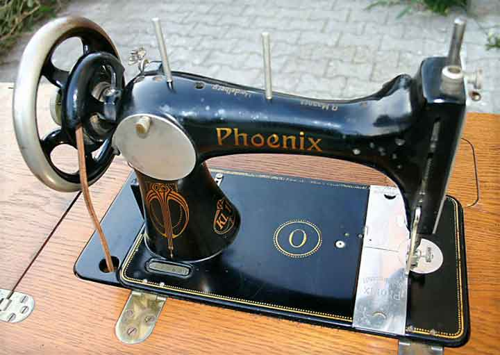
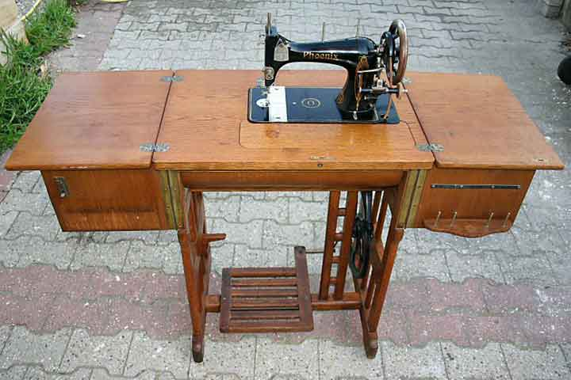

The NeedleBar
Baer & Rempel Class O
1909 - 1944
Small type. Vibrating shuttle
Front View
|
Rear View
|
Treadle Base
Pictures courtesy of Jan Cnossen
Front View

Rear View

Treadle Base

© Alan Quinn 2004. All Rights Reserved
This page may not be reproduced or distributed in part or in whole without the prior written permission of the copyright owner